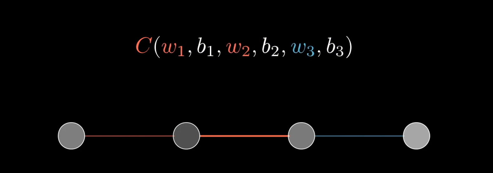

每层只有一个神经元

我们的目标是调整这些参数，使得代价C最小
这里以后两个神经元为例进行演示
首先推导代价函数关于权重w的偏导数
其中上标(L)代表第L层

$w^{(L)}$的的微小扰动会影响$z^{(L)}$，同样$z^{(L)}$的微小扰动会影响$a^{(L)}$，从而最终影响到代价值
它们之间的影响是通过链式法则传递的

现在来求解以上各个偏导数
当样本量不止一个时，则总的代价函数是许多训练样本代价的总和平均值

当然，对于多层的神经网络来说，以上所求仅仅是梯度中的一个分量

对于偏置项同样有以下推导
也可以求出代价函数对于上一层激活值的敏感度
主要是$z^{(L)}$对上一层的敏感度，其余不动
每层有若干神经元
依然用上标括号内的数字代表第几层，同时用下标i和j分别标注第(L-1)层和第(L)层的神经元
在上图中，第L-1层有3个神经元，记连接第k个神经元和第j个神经元的（权重）连线为${w_{jk}}^{(L)}$
与之前的单个神经元相比，此时有3个神经元，因此代价函数是每一个神经元的代价值之和，每一层的权重个数也由一个：$w^{(L)}$变为3个：${w_{j0}}^{(L)}，{w_{j1}}^{(L)}，{w_{j2}}^{(L)}$
推广到更多的神经元，则有

这和之前单个神经元的推导实质上是一致的，偏导数的形式并没有发生改变
发生改变的，是代价对(L-1)层的激活值的导数

因为此时(L-1)层和第(L)层都有多个神经元，第(L-1)层的某一个神经元${a_k}^{(L-1)}$会作用到第(L)层的所有神经元，此时有多条权重连线。因此，最终的偏导数表达式应该是第(L)层的所有神经元关于第(L-1)层的某神经元的激活值的偏导数表达式之和，正如上图所示
这样，我们便可以层层递进求出所有的偏导数，它们组成了梯度（结合上图中的神经网络架构图能更好的理解最后的公式）
至此，反向传播算法推导结束。